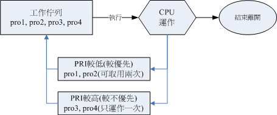

16.3 程序管理
本章一开始就提到所谓的“程序”的概念，包括程序的触发、子程序与父程序的相关性等等， 此外，还有那个“程序的相依性”以及所谓的“僵尸程序”等等需要说明的呢！为什么程序管理这么重要呢？这是因为：
- 首先，本章一开始就谈到的，我们在操作系统时的各项工作其实都是经过某个 PID 来达成的 （包括你的 bash 环境）， 因此，能不能进行某项工作，就与该程序的权限有关了。
- 再来，如果您的 Linux 系统是个很忙碌的系统，那么当整个系统资源快要被使用光时， 您是否能够找出最耗系统的那个程序，然后删除该程序，让系统恢复正常呢？
- 此外，如果由于某个程序写的不好，导致产生一个有问题的程序在内存当中，您又该如何找出他，然后将他移除呢？
- 如果同时有五六项工作在您的系统当中运行，但其中有一项工作才是最重要的， 该如何让那一项重要的工作被最优先执行呢？
所以啰，一个称职的系统管理员，必须要熟悉程序的管理流程才行，否则当系统发生问题时，还真是很难解决问题呢！ 下面我们会先介绍如何观察程序与程序的状态，然后再加以程序控制啰！
16.3.1 程序的观察
既然程序这么重要，那么我们如何查阅系统上面正在运行当中的程序呢？很简单啊！ 利用静态的 ps 或者是动态的 top，还能以 pstree 来查阅程序树之间的关系喔！
- ps ：将某个时间点的程序运行情况撷取下来
[root@study ~]# ps aux <==观察系统所有的程序数据
[root@study ~]# ps -lA <==也是能够观察所有系统的数据
[root@study ~]# ps axjf <==连同部分程序树状态
选项与参数：
-A ：所有的 process 均显示出来，与 -e 具有同样的效用；
-a ：不与 terminal 有关的所有 process ；
-u ：有效使用者 （effective user） 相关的 process ；
x ：通常与 a 这个参数一起使用，可列出较完整信息。
输出格式规划：
l ：较长、较详细的将该 PID 的的信息列出；
j ：工作的格式 （jobs format）
-f ：做一个更为完整的输出。
鸟哥个人认为 ps 这个指令的 man page 不是很好查阅，因为很多不同的 Unix 都使用这个 ps 来查阅程序状态， 为了要符合不同版本的需求，所以这个 man page 写的非常的庞大！因此，通常鸟哥都会建议你，直接背两个比较不同的选项， 一个是只能查阅自己 bash 程序的“ ps -l ”一个则是可以查阅所有系统运行的程序“ ps aux ”！注意，你没看错，是“ ps aux ”没有那个减号 （-） ！先来看看关于自己 bash 程序状态的观察：
- 仅观察自己的 bash 相关程序： ps -l
范例一：将目前属于您自己这次登陆的 PID 与相关信息列示出来（只与自己的 bash 有关）
[root@study ~]# ps -l
F S UID PID PPID C PRI NI ADDR SZ WCHAN TTY TIME CMD
4 S 0 14830 13970 0 80 0 - 52686 poll_s pts/0 00:00:00 sudo
4 S 0 14835 14830 0 80 0 - 50511 wait pts/0 00:00:00 su
4 S 0 14836 14835 0 80 0 - 29035 wait pts/0 00:00:00 bash
0 R 0 15011 14836 0 80 0 - 30319 - pts/0 00:00:00 ps
# 还记得鸟哥说过，非必要不要使用 root 直接登陆吧？从这个 ps -l 的分析，你也可以发现，
# 鸟哥其实是使用 sudo 才转成 root 的身份～否则连测试机，鸟哥都是使用一般帐号登陆的！
系统整体的程序运行是非常多的，但如果使用 ps -l 则仅列出与你的操作环境 （bash） 有关的程序而已， 亦即最上层的父程序会是你自己的 bash 而没有延伸到 systemd （后续会交待！） 这支程序去！那么 ps -l 秀出来的数据有哪些呢？ 我们就来观察看看：
F：代表这个程序旗标 （process flags），说明这个程序的总结权限，常见号码有：
- 若为 4 表示此程序的权限为 root ；
- 若为 1 则表示此子程序仅进行复制（fork）而没有实际执行（exec）。
S：代表这个程序的状态 （STAT），主要的状态有：
- R （Running）：该程序正在运行中；
- S （Sleep）：该程序目前正在睡眠状态（idle），但可以被唤醒（signal）。
- D ：不可被唤醒的睡眠状态，通常这支程序可能在等待 I/O 的情况（ex>打印）
- T ：停止状态（stop），可能是在工作控制（背景暂停）或除错 （traced） 状态；
- Z （Zombie）：僵尸状态，程序已经终止但却无法被移除至内存外。
UID/PID/PPID：代表“此程序被该 UID 所拥有/程序的 PID 号码/此程序的父程序 PID 号码”
C：代表 CPU 使用率，单位为百分比；
PRI/NI：Priority/Nice 的缩写，代表此程序被 CPU 所执行的优先顺序，数值越小代表该程序越快被 CPU 执行。详细的 PRI 与 NI 将在下一小节说明。
ADDR/SZ/WCHAN：都与内存有关，ADDR 是 kernel function，指出该程序在内存的哪个部分，如果是个 running 的程序，一般就会显示“ - ” / SZ 代表此程序用掉多少内存 / WCHAN 表示目前程序是否运行中，同样的， 若为 - 表示正在运行中。
TTY：登陆者的终端机位置，若为远端登陆则使用动态终端接口 （pts/n）；
TIME：使用掉的 CPU 时间，注意，是此程序实际花费 CPU 运行的时间，而不是系统时间；
CMD：就是 command 的缩写，造成此程序的触发程序之指令为何。
所以你看到的 ps -l 输出讯息中，他说明的是：“bash 的程序属于 UID 为 0 的使用者，状态为睡眠 （sleep）， 之所以为睡眠因为他触发了 ps （状态为 run） 之故。此程序的 PID 为 14836，优先执行顺序为 80 ， 下达 bash 所取得的终端接口为 pts/0 ，运行状态为等待 （wait） 。”这样已经够清楚了吧？ 您自己尝试解析一下那么 ps 那一行代表的意义为何呢？ ^_^
接下来让我们使用 ps 来观察一下系统内所有的程序状态吧！
- 观察系统所有程序： ps aux
范例二：列出目前所有的正在内存当中的程序：
[root@study ~]# ps aux
USER PID %CPU %MEM VSZ RSS TTY STAT START TIME COMMAND
root 1 0.0 0.2 60636 7948 ? Ss Aug04 0:01 /usr/lib/systemd/systemd ...
root 2 0.0 0.0 0 0 ? S Aug04 0:00 [kthreadd]
.....（中间省略）.....
root 14830 0.0 0.1 210744 3988 pts/0 S Aug04 0:00 sudo su -
root 14835 0.0 0.1 202044 2996 pts/0 S Aug04 0:00 su -
root 14836 0.0 0.1 116140 2960 pts/0 S Aug04 0:00 -bash
.....（中间省略）.....
root 18459 0.0 0.0 123372 1380 pts/0 R+ 00:25 0:00 ps aux
你会发现 ps -l 与 ps aux 显示的项目并不相同！在 ps aux 显示的项目中，各字段的意义为：
- USER：该 process 属于那个使用者帐号的？
- PID ：该 process 的程序识别码。
- %CPU：该 process 使用掉的 CPU 资源百分比；
- %MEM：该 process 所占用的实体内存百分比；
- VSZ ：该 process 使用掉的虚拟内存量 （KBytes）
- RSS ：该 process 占用的固定的内存量 （KBytes）
- TTY ：该 process 是在那个终端机上面运行，若与终端机无关则显示 ?，另外， tty1-tty6 是本机上面的登陆者程序，若为 pts/0 等等的，则表示为由网络连接进主机的程序。
- STAT：该程序目前的状态，状态显示与 ps -l 的 S 旗标相同 （R/S/T/Z）
- START：该 process 被触发启动的时间；
- TIME ：该 process 实际使用 CPU 运行的时间。
- COMMAND：该程序的实际指令为何？
一般来说，ps aux 会依照 PID 的顺序来排序显示，我们还是以 14836 那个 PID 那行来说明！该行的意义为“ root 执行的 bash PID 为 14836，占用了 0.1% 的内存容量百分比，状态为休眠 （S），该程序启动的时间为 8 月 4 号，因此启动太久了， 所以没有列出实际的时间点。且取得的终端机环境为 pts/0 。”与 ps aux 看到的其实是同一个程序啦！这样可以理解吗？ 让我们继续使用 ps 来观察一下其他的信息吧！
范例三：以范例一的显示内容，显示出所有的程序：
[root@study ~]# ps -lA
F S UID PID PPID C PRI NI ADDR SZ WCHAN TTY TIME CMD
4 S 0 1 0 0 80 0 - 15159 ep_pol ? 00:00:01 systemd
1 S 0 2 0 0 80 0 - 0 kthrea ? 00:00:00 kthreadd
1 S 0 3 2 0 80 0 - 0 smpboo ? 00:00:00 ksoftirqd/0
....（以下省略）....
# 你会发现每个字段与 ps -l 的输出情况相同，但显示的程序则包括系统所有的程序。
范例四：列出类似程序树的程序显示：
[root@study ~]# ps axjf
PPID PID PGID SID TTY TPGID STAT UID TIME COMMAND
0 2 0 0 ? -1 S 0 0:00 [kthreadd]
2 3 0 0 ? -1 S 0 0:00 \_ [ksoftirqd/0]
.....（中间省略）.....
1 1326 1326 1326 ? -1 Ss 0 0:00 /usr/sbin/sshd -D
1326 13923 13923 13923 ? -1 Ss 0 0:00 \_ sshd: dmtsai [priv]
13923 13927 13923 13923 ? -1 S 1000 0:00 \_ sshd: dmtsai@pts/0
13927 13928 13928 13928 pts/0 18703 Ss 1000 0:00 \_ -bash
13928 13970 13970 13928 pts/0 18703 S 1000 0:00 \_ bash
13970 14830 14830 13928 pts/0 18703 S 0 0:00 \_ sudo su -
14830 14835 14830 13928 pts/0 18703 S 0 0:00 \_ su -
14835 14836 14836 13928 pts/0 18703 S 0 0:00 \_ -bash
14836 18703 18703 13928 pts/0 18703 R+ 0 0:00 \_ ps axjf
.....（后面省略）.....
看出来了吧？其实鸟哥在进行一些测试时，都是以网络连线进虚拟机来测试的，所以啰，你会发现其实程序之间是有相关性的啦！ 不过，其实还可以使用 pstree 来达成这个程序树喔！以上面的例子来看，鸟哥是通过 sshd 提供的网络服务取得一个程序， 该程序提供 bash 给我使用，而我通过 bash 再去执行 ps axjf ！这样可以看的懂了吗？其他各字段的意义请 man ps （虽然真的很难 man 的出来！） 啰！
范例五：找出与 cron 与 rsyslog 这两个服务有关的 PID 号码？
[root@study ~]# ps aux | egrep '（cron|rsyslog）'
root 742 0.0 0.1 208012 4088 ? Ssl Aug04 0:00 /usr/sbin/rsyslogd -n
root 1338 0.0 0.0 126304 1704 ? Ss Aug04 0:00 /usr/sbin/crond -n
root 18740 0.0 0.0 112644 980 pts/0 S+ 00:49 0:00 grep -E --color=auto （cron|rsyslog）
# 所以号码是 742 及 1338 这两个啰！就是这样找的啦！
除此之外，我们必须要知道的是“僵尸 （zombie） ”程序是什么？ 通常，造成僵尸程序的成因是因为该程序应该已经执行完毕，或者是因故应该要终止了， 但是该程序的父程序却无法完整的将该程序结束掉，而造成那个程序一直存在内存当中。 如果你发现在某个程序的 CMD 后面还接上 <defunct> 时，就代表该程序是僵尸程序啦，例如：
apache 8683 0.0 0.9 83384 9992 ? Z 14:33 0:00 /usr/sbin/httpd <defunct>
当系统不稳定的时候就容易造成所谓的僵尸程序，可能是因为程序写的不好啦，或者是使用者的操作习惯不良等等所造成。 如果你发现系统中很多僵尸程序时，记得啊！要找出该程序的父程序，然后好好的做个追踪，好好的进行主机的环境最优化啊！ 看看有什么地方需要改善的，不要只是直接将他 kill 掉而已呢！不然的话，万一他一直产生，那可就麻烦了！ @_@
事实上，通常僵尸程序都已经无法控管，而直接是交给 systemd 这支程序来负责了，偏偏 systemd 是系统第一支执行的程序， 他是所有程序的父程序！我们无法杀掉该程序的 （杀掉他，系统就死掉了！），所以啰，如果产生僵尸程序， 而系统过一阵子还没有办法通过核心非经常性的特殊处理来将该程序删除时，那你只好通过 reboot 的方式来将该程序抹去了！
- top：动态观察程序的变化
相对于 ps 是撷取一个时间点的程序状态， top 则可以持续侦测程序运行的状态！使用方式如下：
[root@study ~]# top [-d 数字] | top [-bnp]
选项与参数：
-d ：后面可以接秒数，就是整个程序画面更新的秒数。默认是 5 秒；
-b ：以批次的方式执行 top ，还有更多的参数可以使用喔！
通常会搭配数据流重导向来将批次的结果输出成为文件。
-n ：与 -b 搭配，意义是，需要进行几次 top 的输出结果。
-p ：指定某些个 PID 来进行观察监测而已。
在 top 执行过程当中可以使用的按键指令：
? ：显示在 top 当中可以输入的按键指令；
P ：以 CPU 的使用资源排序显示；
M ：以 Memory 的使用资源排序显示；
N ：以 PID 来排序喔！
T ：由该 Process 使用的 CPU 时间累积 （TIME+） 排序。
k ：给予某个 PID 一个讯号 （signal）
r ：给予某个 PID 重新制订一个 nice 值。
q ：离开 top 软件的按键。
其实 top 的功能非常多！可以用的按键也非常的多！可以参考 man top 的内部说明文档！ 鸟哥这里仅是列出一些鸟哥自己常用的选项而已。接下来让我们实际观察一下如何使用 top 与 top 的画面吧！
范例一：每两秒钟更新一次 top ，观察整体信息：
[root@study ~]# top -d 2
top - 00:53:59 up 6:07, 3 users, load average: 0.00, 0.01, 0.05
Tasks: 179 total, 2 running, 177 sleeping, 0 stopped, 0 zombie
%Cpu（s）: 0.0 us, 0.0 sy, 0.0 ni,100.0 id, 0.0 wa, 0.0 hi, 0.0 si, 0.0 st
KiB Mem : 2916388 total, 1839140 free, 353712 used, 723536 buff/cache
KiB Swap: 1048572 total, 1048572 free, 0 used. 2318680 avail Mem
<==如果加入 k 或 r 时，就会有相关的字样出现在这里喔！
PID USER PR NI VIRT RES SHR S %CPU %MEM TIME+ COMMAND
18804 root 20 0 130028 1872 1276 R 0.5 0.1 0:00.02 top
1 root 20 0 60636 7948 2656 S 0.0 0.3 0:01.70 systemd
2 root 20 0 0 0 0 S 0.0 0.0 0:00.01 kthreadd
3 root 20 0 0 0 0 S 0.0 0.0 0:00.00 ksoftirqd/0
top 也是个挺不错的程序观察工具！但不同于 ps 是静态的结果输出， top 这个程序可以持续的监测整个系统的程序工作状态。 在默认的情况下，每次更新程序资源的时间为 5 秒，不过，可以使用 -d 来进行修改。 top 主要分为两个画面，上面的画面为整个系统的资源使用状态，基本上总共有六行，显示的内容依序是：
第一行（top...）：这一行显示的信息分别为：
- 目前的时间，亦即是 00:53:59 那个项目；
- 开机到目前为止所经过的时间，亦即是 up 6:07, 那个项目；
- 已经登陆系统的使用者人数，亦即是 3 users, 项目；
- 系统在 1, 5, 15 分钟的平均工作负载。我们在第十五章谈到的 batch 工作方式为负载小于 0.8 就是这个负载啰！代表的是 1, 5, 15 分钟，系统平均要负责运行几个程序（工作）的意思。 越小代表系统越闲置，若高于 1 得要注意你的系统程序是否太过繁复了！
第二行（Tasks...）：显示的是目前程序的总量与个别程序在什么状态（running, sleeping, stopped, zombie）。 比较需要注意的是最后的 zombie 那个数值，如果不是 0 ！好好看看到底是那个 process 变成僵尸了吧？
第三行（%Cpus...）：显示的是 CPU 的整体负载，每个项目可使用 ? 查阅。需要特别注意的是 wa 项目，那个项目代表的是 I/O wait， 通常你的系统会变慢都是 I/O 产生的问题比较大！因此这里得要注意这个项目耗用 CPU 的资源喔！ 另外，如果是多核心的设备，可以按下数字键“1”来切换成不同 CPU 的负载率。
第四行与第五行：表示目前的实体内存与虚拟内存 （Mem/Swap） 的使用情况。 再次重申，要注意的是 swap 的使用量要尽量的少！如果 swap 被用的很大量，表示系统的实体内存实在不足！
第六行：这个是当在 top 程序当中输入指令时，显示状态的地方。
至于 top 下半部分的画面，则是每个 process 使用的资源情况。比较需要注意的是：
- PID ：每个 process 的 ID 啦！
- USER：该 process 所属的使用者；
- PR ：Priority 的简写，程序的优先执行顺序，越小越早被执行；
- NI ：Nice 的简写，与 Priority 有关，也是越小越早被执行；
- %CPU：CPU 的使用率；
- %MEM：内存的使用率；
- TIME+：CPU 使用时间的累加；
top 默认使用 CPU 使用率 （%CPU） 作为排序的重点，如果你想要使用内存使用率排序，则可以按下“M”， 若要回复则按下“P”即可。如果想要离开 top 则按下“ q ”吧！如果你想要将 top 的结果输出成为文件时， 可以这样做：
范例二：将 top 的信息进行 2 次，然后将结果输出到 /tmp/top.txt
[root@study ~]# top -b -n 2 > /tmp/top.txt
# 这样一来，嘿嘿！就可以将 top 的信息存到 /tmp/top.txt 文件中了。
这玩意儿很有趣！可以帮助你将某个时段 top 观察到的结果存成文件，可以用在你想要在系统背景下面执行。 由于是背景下面执行，与终端机的屏幕大小无关，因此可以得到全部的程序画面！那如果你想要观察的程序 CPU 与内存使用率都很低，结果老是无法在第一行显示时，该怎办？我们可以仅观察单一程序喔！如下所示：
范例三：我们自己的 bash PID 可由 $$ 变量取得，请使用 top 持续观察该 PID
[root@study ~]# echo $$
14836 <==就是这个数字！他是我们 bash 的 PID
[root@study ~]# top -d 2 -p 14836
top - 01:00:53 up 6:14, 3 users, load average: 0.00, 0.01, 0.05
Tasks: 1 total, 0 running, 1 sleeping, 0 stopped, 0 zombie
%Cpu（s）: 0.0 us, 0.1 sy, 0.0 ni, 99.9 id, 0.0 wa, 0.0 hi, 0.0 si, 0.0 st
KiB Mem : 2916388 total, 1839264 free, 353424 used, 723700 buff/cache
KiB Swap: 1048572 total, 1048572 free, 0 used. 2318848 avail Mem
PID USER PR NI VIRT RES SHR S %CPU %MEM TIME+ COMMAND
14836 root 20 0 116272 3136 1848 S 0.0 0.1 0:00.07 bash
看到没！就只会有一支程序给你看！很容易观察吧！好，那么如果我想要在 top 下面进行一些动作呢？ 比方说，修改 NI 这个数值呢？可以这样做：
范例四：承上题，上面的 NI 值是 0 ，想要改成 10 的话？
# 在范例三的 top 画面当中直接按下 r 之后，会出现如下的图样！
top - 01:02:01 up 6:15, 3 users, load average: 0.00, 0.01, 0.05
Tasks: 1 total, 0 running, 1 sleeping, 0 stopped, 0 zombie
%Cpu（s）: 0.1 us, 0.0 sy, 0.0 ni, 99.9 id, 0.0 wa, 0.0 hi, 0.0 si, 0.0 st
KiB Mem : 2916388 total, 1839140 free, 353576 used, 723672 buff/cache
KiB Swap: 1048572 total, 1048572 free, 0 used. 2318724 avail Mem
PID to renice [default pid = 14836] 14836
PID USER PR NI VIRT RES SHR S %CPU %MEM TIME+ COMMAND
14836 root 20 0 116272 3136 1848 S 0.0 0.1 0:00.07 bash
在你完成上面的动作后，在状态列会出现如下的信息：
Renice PID 14836 to value 10 <==这是 nice 值
PID USER PR NI VIRT RES SHR S %CPU %MEM TIME+ COMMAND
接下来你就会看到如下的显示画面！
top - 01:04:13 up 6:17, 3 users, load average: 0.00, 0.01, 0.05
Tasks: 1 total, 0 running, 1 sleeping, 0 stopped, 0 zombie
%Cpu（s）: 0.0 us, 0.0 sy, 0.0 ni,100.0 id, 0.0 wa, 0.0 hi, 0.0 si, 0.0 st
KiB Mem : 2916388 total, 1838676 free, 354020 used, 723692 buff/cache
KiB Swap: 1048572 total, 1048572 free, 0 used. 2318256 avail Mem
PID USER PR NI VIRT RES SHR S %CPU %MEM TIME+ COMMAND
14836 root 30 10 116272 3136 1848 S 0.0 0.1 0:00.07 bash
看到不同处了吧？底线的地方就是修改了之后所产生的效果！一般来说，如果鸟哥想要找出最损耗 CPU 资源的那个程序时，大多使用的就是 top 这支程序啦！然后强制以 CPU 使用资源来排序 （在 top 当中按下 P 即可）， 就可以很快的知道啦！ ^_^。多多爱用这个好用的东西喔！
- pstree
[root@study ~]# pstree [-A|U] [-up]
选项与参数：
-A ：各程序树之间的连接以 ASCII 字符来连接；
-U ：各程序树之间的连接以万国码的字符来连接。在某些终端接口下可能会有错误；
-p ：并同时列出每个 process 的 PID；
-u ：并同时列出每个 process 的所属帐号名称。
范例一：列出目前系统上面所有的程序树的相关性：
[root@study ~]# pstree -A
systemd-+-ModemManager---2*[{ModemManager}] # 这行是 ModenManager 与其子程序
|-NetworkManager---3*[{NetworkManager}] # 前面有数字，代表子程序的数量！
....（中间省略）....
|-sshd---sshd---sshd---bash---bash---sudo---su---bash---pstree <==我们指令执行的相依性
....（下面省略）....
# 注意一下，为了节省版面，所以鸟哥已经删去很多程序了！
范例二：承上题，同时秀出 PID 与 users
[root@study ~]# pstree -Aup
systemd（1）-+-ModemManager（745）-+-{ModemManager}（785）
| `-{ModemManager}（790）
|-NetworkManager（870）-+-{NetworkManager}（907）
| |-{NetworkManager}（911）
| `-{NetworkManager}（914）
....（中间省略）....
|-sshd（1326）---sshd（13923）---sshd（13927,dmtsai）---bash（13928）---bash（13970）---
....（下面省略）....
# 在括号 （） 内的即是 PID 以及该程序的 owner 喔！一般来说，如果该程序的所有人与父程序同，
# 就不会列出，但是如果与父程序不一样，那就会列出该程序的拥有者！看上面 13927 就转变成 dmtsai 了
如果要找程序之间的相关性，这个 pstree 真是好用到不行！直接输入 pstree 可以查到程序相关性，如上表所示，还会使用线段将相关性程序链接起来哩！ 一般链接符号可以使用 ASCII 码即可，但有时因为语系问题会主动的以 Unicode 的符号来链接， 但因为可能终端机无法支持该编码，或许会造成乱码问题。因此可以加上 -A 选项来克服此类线段乱码问题。
由 pstree 的输出我们也可以很清楚的知道，所有的程序都是依附在 systemd 这支程序下面的！ 仔细看一下，这支程序的 PID 是一号喔！因为他是由 Linux 核心所主动调用的第一支程序！所以 PID 就是一号了。 这也是我们刚刚提到僵尸程序时有提到，为啥发生僵尸程序需要重新开机？ 因为 systemd 要重新启动，而重新启动 systemd 就是 reboot 啰！
如果还想要知道 PID 与所属使用者，加上 -u 及 -p 两个参数即可。我们前面不是一直提到， 如果子程序挂点或者是老是砍不掉子程序时，该如何找到父程序吗？呵呵！用这个 pstree 就对了！ ^_^
16.3.2 程序的管理
程序之间是可以互相控制的！举例来说，你可以关闭、重新启动服务器软件，服务器软件本身是个程序， 你既然可以让她关闭或启动，当然就是可以控制该程序啦！那么程序是如何互相管理的呢？其实是通过给予该程序一个讯号 （signal） 去告知该程序你想要让她作什么！因此这个讯号就很重要啦！
我们也在本章之前的 bash 工作管理当中提到过， 要给予某个已经存在背景中的工作某些动作时，是直接给予一个讯号给该工作号码即可。那么到底有多少 signal 呢？ 你可以使用 kill -l （小写的 L ） 或者是 man 7 signal 都可以查询到！主要的讯号代号与名称对应及内容是：
| 代号 | 名称 | 内容 |
|---|---|---|
| 1 | SIGHUP | 启动被终止的程序，可让该 PID 重新读取自己的配置文件，类似重新启动 |
| 2 | SIGINT | 相当于用键盘输入 [ctrl]-c 来中断一个程序的进行 |
| 9 | SIGKILL | 代表强制中断一个程序的进行，如果该程序进行到一半， 那么尚未完成的部分可能会有“半产品”产生，类似 vim会有 .filename.swp 保留下来。 |
| 15 | SIGTERM | 以正常的结束程序来终止该程序。由于是正常的终止， 所以后续的动作会将他完成。不过，如果该程序已经发生问题，就是无法使用正常的方法终止时， 输入这个 signal 也是没有用的。 |
| 19 | SIGSTOP | 相当于用键盘输入 [ctrl]-z 来暂停一个程序的进行 |
上面仅是常见的 signal 而已，更多的讯号信息请自行 man 7 signal 吧！一般来说，你只要记得“1, 9, 15”这三个号码的意义即可。那么我们如何传送一个讯号给某个程序呢？就通过 kill 或 killall 吧！下面分别来看看：
- kill -signal PID
kill 可以帮我们将这个 signal 传送给某个工作 （%jobnumber） 或者是某个 PID （直接输入数字）。 要再次强调的是： kill 后面直接加数字与加上 %number 的情况是不同的！ 这个很重要喔！因为工作控制中有 1 号工作，但是 PID 1 号则是专指“ systemd ”这支程序！你怎么可以将 systemd 关闭呢？ 关闭 systemd ，你的系统就当掉了啊！所以记得那个 % 是专门用在工作控制的喔！ 我们就活用一下 kill 与刚刚上面提到的 ps 来做个简单的练习吧！
例题：以 ps 找出 rsyslogd 这个程序的 PID 后，再使用 kill 传送讯息，使得 rsyslogd 可以重新读取配置文件。答：由于需要重新读取配置文件，因此 signal 是 1 号。至于找出 rsyslogd 的 PID 可以是这样做：
> ps aux | grep 'rsyslogd' | grep -v 'grep'| awk '{print $2}'
接下来则是实际使用 kill -1 PID，因此，整串指令会是这样：
> kill -SIGHUP $（ps aux | grep 'rsyslogd' | grep -v 'grep'| awk '{print $2}'）
如果要确认有没有重新启动 syslog ，可以参考登录文件的内容，使用如下指令查阅：
> tail -5 /var/log/messages
如果你有看到类似“Aug 5 01:25:02 study rsyslogd: [origin software="rsyslogd" swVersion="7.4.7" x-pid="742" x-info="http://www.rsyslog.com"] rsyslogd was HUPed”之类的字样，就是表示 rsyslogd 在 8/5 有重新启动 （restart） 过了！
了解了这个用法以后，如果未来你想要将某个莫名其妙的登陆者的连线删除的话，就可以通过使用 pstree -p 找到相关程序， 然后再以 kill -9 将该程序删除，该条连线就会被踢掉了！这样很简单吧！
- killall -signal 指令名称
由于 kill 后面必须要加上 PID （或者是 job number），所以，通常 kill 都会配合 ps, pstree 等指令，因为我们必须要找到相对应的那个程序的 ID 嘛！但是，如此一来，很麻烦～有没有可以利用“下达指令的名称”来给予讯号的？举例来说，能不能直接将 rsyslogd 这个程序给予一个 SIGHUP 的讯号呢？可以的！用 killall 吧！
[root@study ~]# killall [-iIe] [command name]
选项与参数：
-i ：interactive 的意思，互动式的，若需要删除时，会出现提示字符给使用者；
-e ：exact 的意思，表示“后面接的 command name 要一致”，但整个完整的指令
不能超过 15 个字符。
-I ：指令名称（可能含参数）忽略大小写。
范例一：给予 rsyslogd 这个指令启动的 PID 一个 SIGHUP 的讯号
[root@study ~]# killall -1 rsyslogd
# 如果用 ps aux 仔细看一下，若包含所有参数，则 /usr/sbin/rsyslogd -n 才是最完整的！
范例二：强制终止所有以 httpd 启动的程序 （其实并没有此程序在系统内）
[root@study ~]# killall -9 httpd
范例三：依次询问每个 bash 程序是否需要被终止运行！
[root@study ~]# killall -i -9 bash
Signal bash（13888） ? （y/N） n <==这个不杀！
Signal bash（13928） ? （y/N） n <==这个不杀！
Signal bash（13970） ? （y/N） n <==这个不杀！
Signal bash（14836） ? （y/N） y <==这个杀掉！
# 具有互动的功能！可以询问你是否要删除 bash 这个程序。要注意，若没有 -i 的参数，
# 所有的 bash 都会被这个 root 给杀掉！包括 root 自己的 bash 喔！ ^_^
总之，要删除某个程序，我们可以使用 PID 或者是启动该程序的指令名称， 而如果要删除某个服务呢？呵呵！最简单的方法就是利用 killall ， 因为他可以将系统当中所有以某个指令名称启动的程序全部删除。 举例来说，上面的范例二当中，系统内所有以 httpd 启动的程序，就会通通的被删除啦！ ^_^
16.3.3 关于程序的执行顺序
我们知道 Linux 是多用户多任务的环境，由 top 的输出结果我们也发现， 系统同时间有非常多的程序在运行中，只是绝大部分的程序都在休眠 （sleeping） 状态而已。 想一想，如果所有的程序同时被唤醒，那么 CPU 应该要先处理那个程序呢？也就是说，那个程序被执行的优先序比较高？ 这就得要考虑到程序的优先执行序 （Priority） 与 CPU 调度啰！

Tips CPU 调度与前一章的例行性工作调度并不一样。 CPU 调度指的是每支程序被 CPU 运行的演算规则， 而例行性工作调度则是将某支程序安排在某个时间再交由系统执行。 CPU 调度与操作系统较具有相关性！
- Priority 与 Nice 值
我们知道 CPU 一秒钟可以运行多达数 G 的微指令次数，通过核心的 CPU 调度可以让各程序被 CPU 所切换运行， 因此每个程序在一秒钟内或多或少都会被 CPU 执行部分的指令码。如果程序都是集中在一个伫列中等待 CPU 的运行， 而不具有优先顺序之分，也就是像我们去游乐场玩热门游戏需要排队一样，每个人都是照顺序来！ 你玩过一遍后还想再玩 （没有执行完毕），请到后面继续排队等待。情况有点像下面这样：
 图16.3.1、并没有优先顺序的程序伫列示意图
图16.3.1、并没有优先顺序的程序伫列示意图
上图中假设 pro1, pro2 是紧急的程序， pro3, pro4 是一般的程序，在这样的环境中，由于不具有优先顺序， 唉啊！pro1, pro2 还是得要继续等待而没有优待呢！如果 pro3, pro4 的工作又臭又长！那么紧急的 pro1, pro2 就得要等待个老半天才能够完成！真麻烦啊！所以啰，我们想要将程序分优先顺序啦！如果优先序较高则运行次数可以较多次， 而不需要与较慢优先的程序抢位置！我们可以将程序的优先顺序与 CPU 调度进行如下图的解释：
图16.3.2、具有优先顺序的程序伫列示意图
如上图所示，具高优先权的 pro1, pro2 可以被取用两次，而较不重要的 pro3, pro4 则运行次数较少。 如此一来 pro1, pro2 就可以较快被完成啦！要注意，上图仅是示意图，并非较优先者一定会被运行两次啦！ 为了要达到上述的功能，我们 Linux 给予程序一个所谓的“优先执行序 （priority, PRI）”， 这个 PRI 值越低代表越优先的意思。不过这个 PRI 值是由核心动态调整的， 使用者无法直接调整 PRI 值的。先来瞧瞧 PRI 曾在哪里出现？
[root@study ~]# ps -l
F S UID PID PPID C PRI NI ADDR SZ WCHAN TTY TIME CMD
4 S 0 14836 14835 0 90 10 - 29068 wait pts/0 00:00:00 bash
0 R 0 19848 14836 0 90 10 - 30319 - pts/0 00:00:00 ps
# 你应该要好奇，怎么我的 NI 已经是 10 了？还记得刚刚 top 的测试吗？我们在那边就有改过一次喔！
由于 PRI 是核心动态调整的，我们使用者也无权去干涉 PRI ！那如果你想要调整程序的优先执行序时，就得要通过 Nice 值了！Nice 值就是上表的 NI 啦！一般来说， PRI 与 NI 的相关性如下：
PRI（new） = PRI（old） + nice
不过你要特别留意到，如果原本的 PRI 是 50 ，并不是我们给予一个 nice = 5 ，就会让 PRI 变成 55 喔！ 因为 PRI 是系统“动态”决定的，所以，虽然 nice 值是可以影响 PRI ，不过， 最终的 PRI 仍是要经过系统分析后才会决定的。另外， nice 值是有正负的喔，而既然 PRI 越小越早被执行， 所以，当 nice 值为负值时，那么该程序就会降低 PRI 值，亦即会变的较优先被处理。此外，你必须要留意到：
- nice 值可调整的范围为 -20 ~ 19 ；
- root 可随意调整自己或他人程序的 Nice 值，且范围为 -20 ~ 19 ；
- 一般使用者仅可调整自己程序的 Nice 值，且范围仅为 0 ~ 19 （避免一般用户抢占系统资源）；
- 一般使用者仅可将 nice 值越调越高，例如本来 nice 为 5 ，则未来仅能调整到大于 5；
这也就是说，要调整某个程序的优先执行序，就是“调整该程序的 nice 值”啦！那么如何给予某个程序 nice 值呢？有两种方式，分别是：
- 一开始执行程序就立即给予一个特定的 nice 值：用 nice 指令；
调整某个已经存在的 PID 的 nice 值：用 renice 指令。
nice ：新执行的指令即给予新的 nice 值
[root@study ~]# nice [-n 数字] command
选项与参数：
-n ：后面接一个数值，数值的范围 -20 ~ 19。
范例一：用 root 给一个 nice 值为 -5 ，用于执行 vim ，并观察该程序！
[root@study ~]# nice -n -5 vim &
[1] 19865
[root@study ~]# ps -l
F S UID PID PPID C PRI NI ADDR SZ WCHAN TTY TIME CMD
4 S 0 14836 14835 0 90 10 - 29068 wait pts/0 00:00:00 bash
4 T 0 19865 14836 0 85 5 - 37757 signal pts/0 00:00:00 vim
0 R 0 19866 14836 0 90 10 - 30319 - pts/0 00:00:00 ps
# 原本的 bash PRI 为 90 ，所以 vim 默认应为 90。不过由于给予 nice 为 -5 ，
# 因此 vim 的 PRI 降低了！RPI 与 NI 各减 5 ！但不一定每次都是正好相同喔！因为核心会动态调整
[root@study ~]# kill -9 %1 <==测试完毕将 vim 关闭
就如同前面说的， nice 是用来调整程序的执行优先顺序！这里只是一个执行的范例罢了！ 通常什么时候要将 nice 值调大呢？举例来说，系统的背景工作中， 某些比较不重要的程序之进行：例如备份工作！由于备份工作相当的耗系统资源， 这个时候就可以将备份的指令之 nice 值调大一些，可以使系统的资源分配的更为公平！
- renice ：已存在程序的 nice 重新调整
[root@study ~]# renice [number] PID
选项与参数：
PID ：某个程序的 ID 啊！
范例一：找出自己的 bash PID ，并将该 PID 的 nice 调整到 -5
[root@study ~]# ps -l
F S UID PID PPID C PRI NI ADDR SZ WCHAN TTY TIME CMD
4 S 0 14836 14835 0 90 10 - 29068 wait pts/0 00:00:00 bash
0 R 0 19900 14836 0 90 10 - 30319 - pts/0 00:00:00 ps
[root@study ~]# renice -5 14836
14836 （process ID） old priority 10, new priority -5
[root@study ~]# ps -l
F S UID PID PPID C PRI NI ADDR SZ WCHAN TTY TIME CMD
4 S 0 14836 14835 0 75 -5 - 29068 wait pts/0 00:00:00 bash
0 R 0 19910 14836 0 75 -5 - 30319 - pts/0 00:00:00 ps
如果要调整的是已经存在的某个程序的话，那么就得要使用 renice 了。使用的方法很简单， renice 后面接上数值及 PID 即可。因为后面接的是 PID ，所以你务必要以 ps 或者其他程序观察的指令去找出 PID 才行啊！
由上面这个范例当中我们也看的出来，虽然修改的是 bash 那个程序，但是该程序所触发的 ps 指令当中的 nice 也会继承而为 -5 喔！了解了吧！整个 nice 值是可以在父程序 --> 子程序之间传递的呢！ 另外，除了 renice 之外，其实那个 top 同样的也是可以调整 nice 值的！
16.3.4 系统资源的观察
除了系统的程序之外，我们还必须就系统的一些资源进行检查啊！举例来说，我们使用 top 可以看到很多系统的资源对吧！那么，还有没有其他的工具可以查阅的？ 当然有啊！下面这些工具指令可以玩一玩！
- free ：观察内存使用情况
[root@study ~]# free [-b|-k|-m|-g|-h] [-t] [-s N -c N]
选项与参数：
-b ：直接输入 free 时，显示的单位是 KBytes，我们可以使用 b（Bytes）, m（MBytes）
k（KBytes）, 及 g（GBytes） 来显示单位喔！也可以直接让系统自己指定单位 （-h）
-t ：在输出的最终结果，显示实体内存与 swap 的总量。
-s ：可以让系统每几秒钟输出一次，不间断的一直输出的意思！对于系统观察挺有效！
-c ：与 -s 同时处理～让 free 列出几次的意思～
范例一：显示目前系统的内存容量
[root@study ~]# free -m
total used free shared buff/cache available
Mem: 2848 346 1794 8 706 2263
Swap: 1023 0 1023
仔细看看，我的系统当中有 2848MB 左右的实体内存，我的 swap 有 1GB 左右， 那我使用 free -m 以 MBytes 来显示时，就会出现上面的信息。Mem 那一行显示的是实体内存的量， Swap 则是内存交换空间的量。 total 是总量， used 是已被使用的量， free 则是剩余可用的量。 后面的 shared/buffers/cached 则是在已被使用的量当中，用来作为缓冲及高速缓存的量，这些 shared/buffers/cached 的用量中，在系统比较忙碌时， 可以被释出而继续利用！因此后面就有一个 available （可用的） 数值！ 。
请看上头范例一的输出，我们可以发现这部测试机根本没有什么特别的服务，但是竟然有 706MB 左右的 cache 耶！ 因为鸟哥在测试过程中还是有读/写/执行很多的文件嘛！这些文件就会被系统暂时高速缓存下来，等待下次运行时可以更快速的取出之意！ 也就是说，系统是“很有效率的将所有的内存用光光”，目的是为了让系统的存取性能加速啦！
很多朋友都会问到这个问题“我的系统明明很轻松，为何内存会被用光光？”现在瞭了吧？ 被用光是正常的！而需要注意的反而是 swap 的量。一般来说， swap 最好不要被使用，尤其 swap 最好不要被使用超过 20% 以上， 如果您发现 swap 的用量超过 20% ，那么，最好还是买实体内存来插吧！ 因为， Swap 的性能跟实体内存实在差很多，而系统会使用到 swap ， 绝对是因为实体内存不足了才会这样做的！如此，了解吧！
Tips Linux 系统为了要加速系统性能，所以会将最常使用到的或者是最近使用到的文件数据高速缓存 （cache） 下来， 这样未来系统要使用该文件时，就直接由内存中搜寻取出，而不需要重新读取硬盘，速度上面当然就加快了！ 因此，实体内存被用光是正常的喔！
- uname：查阅系统与核心相关信息
[root@study ~]# uname [-asrmpi]
选项与参数：
-a ：所有系统相关的信息，包括下面的数据都会被列出来；
-s ：系统核心名称
-r ：核心的版本
-m ：本系统的硬件名称，例如 i686 或 x86_64 等；
-p ：CPU 的类型，与 -m 类似，只是显示的是 CPU 的类型！
-i ：硬件的平台 （ix86）
范例一：输出系统的基本信息
[root@study ~]# uname -a
Linux study.centos.vbird 3.10.0-229.el7.x86_64 #1 SMP Fri Mar 6 11:36:42 UTC 2015
x86_64 x86_64 x86_64 GNU/Linux
这个咚咚我们前面使用过很多次了喔！uname 可以列出目前系统的核心版本、 主要硬件平台以及 CPU 类型等等的信息。以上面范例一的状态来说，我的 Linux 主机使用的核心名称为 Linux，而主机名称为 study.centos.vbird，核心的版本为 3.10.0-229.el7.x86_64 ，该核心版本创建的日期为 2015-3-6，适用的硬件平台为 x86_64 以上等级的硬件平台喔。
- uptime：观察系统启动时间与工作负载
这个指令很单纯呢！就是显示出目前系统已经开机多久的时间，以及 1, 5, 15 分钟的平均负载就是了。还记得 top 吧？没错啦！这个 uptime 可以显示出 top 画面的最上面一行！
[root@study ~]# uptime
02:35:27 up 7:48, 3 users, load average: 0.00, 0.01, 0.05
# [top](../Text/index.html#topm) 这个指令已经谈过相关信息，不再聊！
- netstat ：追踪网络或插槽档
这个 netstat 也是挺好玩的，其实这个指令比较常被用在网络的监控方面，不过，在程序管理方面也是需要了解的啦！ 这个指令的执行如下所示：基本上， netstat 的输出分为两大部分，分别是网络与系统自己的程序相关性部分：
[root@study ~]# netstat -[atunlp]
选项与参数：
-a ：将目前系统上所有的连线、监听、Socket 数据都列出来
-t ：列出 tcp 网络封包的数据
-u ：列出 udp 网络封包的数据
-n ：不以程序的服务名称，以埠号 （port number） 来显示；
-l ：列出目前正在网络监听 （listen） 的服务；
-p ：列出该网络服务的程序 PID
范例一：列出目前系统已经创建的网络连线与 unix socket 状态
[root@study ~]# netstat
Active Internet connections （w/o servers） <==与网络较相关的部分
Proto Recv-Q Send-Q Local Address Foreign Address State
tcp 0 0 172.16.15.100:ssh 172.16.220.234:48300 ESTABLISHED
Active UNIX domain sockets （w/o servers） <==与本机的程序自己的相关性（非网络）
Proto RefCnt Flags Type State I-Node Path
unix 2 [ ] DGRAM 1902 @/org/freedesktop/systemd1/notify
unix 2 [ ] DGRAM 1944 /run/systemd/shutdownd
....（中间省略）....
unix 3 [ ] STREAM CONNECTED 25425 @/tmp/.X11-unix/X0
unix 3 [ ] STREAM CONNECTED 28893
unix 3 [ ] STREAM CONNECTED 21262
在上面的结果当中，显示了两个部分，分别是网络的连线以及 linux 上面的 socket 程序相关性部分。 我们先来看看网际网络连线情况的部分：
- Proto ：网络的封包协定，主要分为 TCP 与 UDP 封包，相关数据请参考服务器篇；
- Recv-Q：非由使用者程序链接到此 socket 的复制的总 Bytes 数；
- Send-Q：非由远端主机传送过来的 acknowledged 总 Bytes 数；
- Local Address ：本地端的 IP:port 情况
- Foreign Address：远端主机的 IP:port 情况
- State ：连线状态，主要有创建（ESTABLISED）及监听（LISTEN）；
我们看上面仅有一条连线的数据，他的意义是：“通过 TCP 封包的连线，远端的 172.16.220.234:48300 连线到本地端的 172.16.15.100:ssh ，这条连线状态是创建 （ESTABLISHED） 的状态！”至于更多的网络环境说明， 就得到鸟哥的另一本服务器篇查阅啰！
除了网络上的连线之外，其实 Linux 系统上面的程序是可以接收不同程序所发送来的信息，那就是 Linux 上头的插槽档 （socket file）。我们在第五章的文件种类有稍微提到 socket 文件， 但当时未谈到程序的概念，所以没有深入谈论。socket file 可以沟通两个程序之间的信息，因此程序可以取得对方传送过来的数据。 由于有 socket file，因此类似 X Window 这种需要通过网络连接的软件，目前新版的 distributions 就以 socket 来进行窗口接口的连线沟通了。上表中 socket file 的输出字段有：
- Proto ：一般就是 unix 啦；
- RefCnt：连接到此 socket 的程序数量；
- Flags ：连线的旗标；
- Type ：socket 存取的类型。主要有确认连线的 STREAM 与不需确认的 DGRAM 两种；
- State ：若为 CONNECTED 表示多个程序之间已经连线创建。
- Path ：连接到此 socket 的相关程序的路径！或者是相关数据输出的路径。
以上表的输出为例，最后那三行在 /tmp/.xx 下面的数据，就是 X Window 窗口接口的相关程序啦！ 而 PATH 指向的就是这些程序要交换数据的插槽文件啰！好！那么 netstat 可以帮我们进行什么任务呢？ 很多喔！我们先来看看，利用 netstat 去看看我们的哪些程序有启动哪些网络的“后门”呢？
范例二：找出目前系统上已在监听的网络连线及其 PID
[root@study ~]# netstat -tulnp
Active Internet connections （only servers）
Proto Recv-Q Send-Q Local Address Foreign Address State PID/Program name
tcp 0 0 0.0.0.0:22 0.0.0.0:* LISTEN 1326/sshd
tcp 0 0 127.0.0.1:25 0.0.0.0:* LISTEN 2349/master
tcp6 0 0 :::22 :::* LISTEN 1326/sshd
tcp6 0 0 ::1:25 :::* LISTEN 2349/master
udp 0 0 0.0.0.0:123 0.0.0.0:* 751/chronyd
udp 0 0 127.0.0.1:323 0.0.0.0:* 751/chronyd
udp 0 0 0.0.0.0:57808 0.0.0.0:* 743/avahi-daemon: r
udp 0 0 0.0.0.0:5353 0.0.0.0:* 743/avahi-daemon: r
udp6 0 0 :::123 :::* 751/chronyd
udp6 0 0 ::1:323 :::* 751/chronyd
# 除了可以列出监听网络的接口与状态之外，最后一个字段还能够显示此服务的
# PID 号码以及程序的指令名称喔！例如上头的 1326 就是该 PID
范例三：将上述的 0.0.0.0:57808 那个网络服务关闭的话？
[root@study ~]# kill -9 743
[root@study ~]# killall -9 avahi-daemon
很多朋友常常有疑问，那就是，我的主机目前到底开了几个门（ports）！其实，不论主机提供什么样的服务， 一定必须要有相对应的 program 在主机上面执行才行啊！举例来说，我们鸟园的 Linux 主机提供的就是 WWW 服务，那么我的主机当然有一个程序在提供 WWW 的服务啊！那就是 Apache 这个软件所提供的啦！ ^_^。 所以，当我执行了这个程序之后，我的系统自然就可以提供 WWW 的服务了。那如何关闭啊？ 就关掉该程序所触发的那个程序就好了！例如上面的范例三所提供的例子啊！不过，这个是非正规的作法喔！ 正规的作法，请查阅下一章的说明呦！
- dmesg ：分析核心产生的讯息
系统在开机的时候，核心会去侦测系统的硬件，你的某些硬件到底有没有被捉到，那就与这个时候的侦测有关。 但是这些侦测的过程要不是没有显示在屏幕上，就是很飞快的在屏幕上一闪而逝！能不能把核心侦测的讯息捉出来瞧瞧？ 可以的，那就使用 dmesg 吧！
所有核心侦测的讯息，不管是开机时候还是系统运行过程中，反正只要是核心产生的讯息，都会被记录到内存中的某个保护区段。 dmesg 这个指令就能够将该区段的讯息读出来的！因为讯息实在太多了，所以执行时可以加入这个管线指令“ | more ”来使画面暂停！
范例一：输出所有的核心开机时的信息
[root@study ~]# dmesg | more
范例二：搜寻开机的时候，硬盘的相关信息为何？
[root@study ~]# dmesg | grep -i vda
[ 0.758551] vda: vda1 vda2 vda3 vda4 vda5 vda6 vda7 vda8 vda9
[ 3.964134] XFS （vda2）: Mounting V4 Filesystem
....（下面省略）....
由范例二就知道我这部主机的硬盘的格式是什么了吧！
- vmstat ：侦测系统资源变化
如果你想要动态的了解一下系统资源的运行，那么这个 vmstat 确实可以玩一玩！vmstat 可以侦测“ CPU / 内存 / 磁盘输入输出状态 ”等等，如果你想要了解一部繁忙的系统到底是哪个环节最累人， 可以使用 vmstat 分析看看。下面是常见的选项与参数说明：
[root@study ~]# vmstat [-a] [延迟 [总计侦测次数]] <==CPU/内存等信息
[root@study ~]# vmstat [-fs] <==内存相关
[root@study ~]# vmstat [-S 单位] <==设置显示数据的单位
[root@study ~]# vmstat [-d] <==与磁盘有关
[root@study ~]# vmstat [-p 分区] <==与磁盘有关
选项与参数：
-a ：使用 inactive/active（活跃与否） 取代 buffer/cache 的内存输出信息；
-f ：开机到目前为止，系统复制 （fork） 的程序数；
-s ：将一些事件 （开机至目前为止） 导致的内存变化情况列表说明；
-S ：后面可以接单位，让显示的数据有单位。例如 K/M 取代 Bytes 的容量；
-d ：列出磁盘的读写总量统计表
-p ：后面列出分区，可显示该分区的读写总量统计表
范例一：统计目前主机 CPU 状态，每秒一次，共计三次！
[root@study ~]# vmstat 1 3
procs ------------memory---------- ---swap-- -----io---- -system-- ------cpu-----
r b swpd free buff cache si so bi bo in cs us sy id wa st
1 0 0 1838092 1504 722216 0 0 4 1 6 9 0 0 100 0 0
0 0 0 1838092 1504 722200 0 0 0 0 13 23 0 0 100 0 0
0 0 0 1838092 1504 722200 0 0 0 0 25 46 0 0 100 0 0
利用 vmstat 甚至可以进行追踪喔！你可以使用类似“ vmstat 5 ”代表每五秒钟更新一次，且无穷的更新！直到你按下 [ctrl]-c 为止。如果你想要实时的知道系统资源的运行状态，这个指令就不能不知道！那么上面的表格各项字段的意义为何？ 基本说明如下：
程序字段 （procs） 的项目分别为： r ：等待运行中的程序数量；b：不可被唤醒的程序数量。这两个项目越多，代表系统越忙碌 （因为系统太忙，所以很多程序就无法被执行或一直在等待而无法被唤醒之故）。
内存字段 （memory） 项目分别为： swpd：虚拟内存被使用的容量； free：未被使用的内存容量； buff：用于缓冲内存； cache：用于高速缓存内存。 这部份则与 free 是相同的。
内存交换空间 （swap） 的项目分别为： si：由磁盘中将程序取出的量； so：由于内存不足而将没用到的程序写入到磁盘的 swap 的容量。 如果 si/so 的数值太大，表示内存内的数据常常得在磁盘与内存之间传来传去，系统性能会很差！
磁盘读写 （io） 的项目分别为： bi：由磁盘读入的区块数量； bo：写入到磁盘去的区块数量。如果这部份的值越高，代表系统的 I/O 非常忙碌！
系统 （system） 的项目分别为： in：每秒被中断的程序次数； cs：每秒钟进行的事件切换次数；这两个数值越大，代表系统与周边设备的沟通非常频繁！ 这些周边设备当然包括磁盘、网卡、时间钟等。
CPU 的项目分别为： us：非核心层的 CPU 使用状态； sy：核心层所使用的 CPU 状态； id：闲置的状态； wa：等待 I/O 所耗费的 CPU 状态； st：被虚拟机 （virtual machine） 所盗用的 CPU 使用状态 （2.6.11 以后才支持）。
由于鸟哥的机器是测试机，所以并没有什么 I/O 或者是 CPU 忙碌的情况。如果改天你的服务器非常忙碌时， 记得使用 vmstat 去看看，到底是哪个部分的资源被使用的最为频繁！一般来说，如果 I/O 部分很忙碌的话，你的系统会变的非常慢！ 让我们再来看看，那么磁盘的部分该如何观察：
范例二：系统上面所有的磁盘的读写状态
[root@study ~]# vmstat -d
disk- ------------reads------------ ------------writes----------- -----IO------
total merged sectors ms total merged sectors ms cur sec
vda 21928 0 992587 47490 7239 2225 258449 13331 0 26
sda 395 1 3168 213 0 0 0 0 0 0
sr0 0 0 0 0 0 0 0 0 0 0
dm-0 19139 0 949575 44608 7672 0 202251 16264 0 25
dm-1 336 0 2688 327 0 0 0 0 0 0
md0 212 0 1221 0 14 0 4306 0 0 0
dm-2 218 0 9922 565 54 0 4672 128 0 0
dm-3 179 0 957 182 11 0 4306 68 0 0
详细的各字段就请诸位大德查阅一下 man vmstat 啰！反正与读写有关啦！这样了解乎！